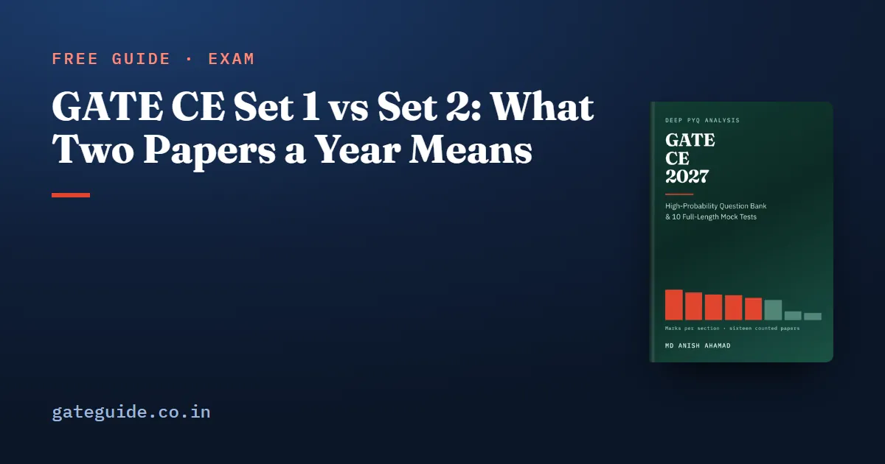

GATE CE Set 1 vs Set 2: What Two Papers a Year Means

GATE Civil Engineering is set as two papers a year: two sessions, two different question papers and two official answer keys. Set 1 and Set 2 are not two versions of one paper. Across the sixteen Civil papers from 2019 to 2026, counted question by question, the two sets of one year differed by between 0 and 16 marks section by section, while the same set number in different years differed by 6 to 30.
In this guide
This guide explains what that means for a candidate: how the two sets are brought onto one scale, why a weightage table that does not name its set cannot be checked, and how the question formats moved between sets.
Key takeaways
- Each Civil year has two papers with two keys. A citation or a weightage figure without its set names nothing checkable.
- The two sets share one syllabus and one pattern: 65 questions, 100 marks, 30 one-mark and 35 two-mark questions, General Aptitude at exactly 15.
- Raw marks from different sessions are normalised before scores are computed.
- The sets of one year were much closer to each other than one year was to the next.
- The MSQ count moved between sets as well as between years, from 0 to 15 per paper.
What "two sets" means
Every candidate sits one session and one paper. Both papers of a year are written to the same syllabus and the same pattern, and each closes at 65 questions and 100 marks, with General Aptitude at exactly 15 marks in all sixteen counted papers. Beyond that, the question papers are different documents with different answer keys.
A small trap in the older files: the 2019 papers' own headers read "Set No 1" and "Set No 3". Those are booklet numbers, not paper sets. The Set 1 and Set 2 used here follow the official archive's session order, as for every other year.
For 2027, which dates and sessions the Civil paper runs in is fixed by the organising institute. Check the current notification on the official GATE 2027 website and the GATE 2027 exam dates guide, and confirm your own session on your admit card.
Normalisation: why the two sets can share one rank list
When a paper is held in more than one session, raw marks are converted to normalised marks before the GATE score is calculated. The conversion rescales each session using that session's own reference points, so a mark from a harder session maps to a higher normalised mark than the same raw mark from an easier one. The formula, every symbol and a worked example with invented marks are in how the GATE score is calculated.
What follows from it is simple: the session you sit is not your choice, and the process is designed so that it should not matter.
Why a weightage table that does not name its set is unreadable
A table that prints "2019: Engineering Mathematics 13" has either counted one of the two papers and labelled it the year, or averaged both, and nothing in the table tells you which. Here are the two 2019 papers, counted against their official keys:
| Section | 2019 Set 1 | 2019 Set 2 |
|---|---|---|
| Engineering Mathematics | 10 | 13 |
| Structural Engineering | 16 | 14 |
| Geotechnical Engineering | 15 | 12 |
| Water Resources Engineering | 13 | 12 |
| Environmental Engineering | 10 | 10 |
| Transportation Engineering | 11 | 11 |
| Geomatics Engineering | 5 | 5 |
| Construction Materials and Management | 4 | 6 |
| Outside the 2027 syllabus | 1 | 2 |
| General Aptitude | 15 | 15 |
Engineering Mathematics at 10 in Set 1 is the lowest figure that section reaches anywhere in the sixteen papers; in Set 2 it was 13. Geotechnical moved by three marks the other way. A single "2019" figure hides both.
The larger difference sits below section level. Across both 2019 papers Concrete Structures drew 1 mark and Steel Structures 10, and 2019 Set 2 contained no Concrete Structures question at all. Structural's section totals, 16 and 14, looked ordinary. IIT Madras set both 2019 papers and organises GATE 2027, which the organising institute guide discusses. Two papers are a signal, not a law.
How much the two sets of one year differed
The measure below adds up the section-by-section differences between the two sets of a year, across the eight technical sections and the off-syllabus row. General Aptitude is 15 in both every time.
| Year | Set 1 against Set 2, summed section differences |
|---|---|
| 2019 | 12 |
| 2020 | 4 |
| 2021 | 8 |
| 2022 | 16 |
| 2023 | 4 |
| 2024 | 0 |
| 2025 | 2 |
| 2026 | 4 |
Because both sets total 100, every mark one section gains another loses, so a sum of 16 means eight marks sat in different sections. 2022 is the widest case: Structural 17 in Set 1 against 13 in Set 2, Transportation 9 against 12, Geomatics 3 against 1, and the off-syllabus row 0 against 4. In 2024 the two sets had identical section marks.
Now compare the same set number across different years. That difference ran from 6 to 30, and the largest, 30, is between 2023 Set 2 and 2024 Set 2. Within a year it never passed 16.
Judgement: both sets of a year appear to be built to one blueprint, and the blueprint moves between years. You can see it in single sections: Transportation was 6 marks in both 2023 papers, the lowest in the record, and Environmental was 8 in both 2024 papers. For practice, this means the year tells you more than the set, and the two sets of one year are best worked as a pair.
The GATE CE 2027 book prints every section of all sixteen papers set by set, the topic tables inside each section, and ten full-length mock tests in the 2027 pattern. See what the book contains.
MSQ counts per set
Question formats moved between sets too. Counted from the official keys:
| Paper | MCQ | MSQ | NAT |
|---|---|---|---|
| 2019 Set 1 | 38 | 0 | 27 |
| 2019 Set 2 | 39 | 0 | 26 |
| 2020 Set 1 | 40 | 0 | 25 |
| 2020 Set 2 | 40 | 0 | 25 |
| 2021 Set 1 | 36 | 1 | 28 |
| 2021 Set 2 | 36 | 1 | 28 |
| 2022 Set 1 | 33 | 7 | 25 |
| 2022 Set 2 | 33 | 7 | 25 |
| 2023 Set 1 | 34 | 10 | 21 |
| 2023 Set 2 | 35 | 11 | 19 |
| 2024 Set 1 | 37 | 5 | 23 |
| 2024 Set 2 | 40 | 3 | 22 |
| 2025 Set 1 | 32 | 11 | 22 |
| 2025 Set 2 | 28 | 15 | 22 |
| 2026 Set 1 | 31 | 6 | 28 |
| 2026 Set 2 | 36 | 4 | 25 |
Three things stand out. MSQ did not exist in the Civil paper until 2021. From 2021 to 2023 the two sets of a year stayed within one MSQ of each other. From 2024 they drifted apart: 5 against 3, 11 against 15, 6 against 4. There is no trend in that sequence to plan around, only variance, so practise the format itself.
An MSQ carries no negative marking and no partial credit: you score only if you select every correct option and no incorrect one. The full marking rules are common to every GATE paper and are set out in the exam pattern and marking scheme guide, which is written for CSE.
What these counts cannot tell you
They cannot tell you which set you will sit, and they do not show that either set is easier. Every figure above counts marks by section and questions by format. None measures difficulty, and nothing in sixteen papers supports a claim that Set 1 or Set 2 is the kinder paper. Difficulty between sessions is the job normalisation was built to do.
How to practise with both sets
- File every past paper by year and set. Cite a question as "2024 Set 1" with its question number, never "2024".
- Work both sets of a year as a pair. What differs between them shows you what the setters were willing to vary.
- Score section by section. Compare the same section across several papers rather than totals.
- Strike out off-syllabus questions. Twenty-five counted marks sit on material the 2027 syllabus no longer names, and they fall unevenly by set: 0 in 2022 Set 1 against 4 in 2022 Set 2.
GATE Guide is independent and is not affiliated with IIT Madras, IISc or GATE.
Frequently asked questions
What is the difference between GATE CE Set 1 and Set 2?
They are two different question papers, sat in two different sessions, each with its own official answer key. Both follow the same syllabus and pattern of 65 questions and 100 marks, with General Aptitude at exactly 15. Across the sixteen counted papers from 2019 to 2026, the section marks of the two sets of one year differed by between 0 and 16.
Is GATE CE Set 2 harder than Set 1?
No count supports that claim in either direction. The counts behind this guide measure where marks sit by section and question type, not how hard a question was. Difficulty differences between sessions are what normalisation exists to handle, and the session you sit is not your choice, so time spent guessing about it is better spent on the syllabus.
How are GATE CE marks compared across the two sets?
A paper held in more than one session is normalised before the score is computed. Raw marks from each session are rescaled using that session's own reference points, so a mark from a harder session is not held against the candidate. The official brochure gives the formula, and the rules for 2027 should be checked in the current notification.
How many MSQs are there in the GATE CE paper?
It has varied more than any other feature of the paper. Neither set of 2019 or 2020 had any. Each 2021 set had one and each 2022 set had seven. After that the counts were 10 and 11 in 2023, 5 and 3 in 2024, 11 and 15 in 2025, and 6 and 4 in 2026. Prepare for a variable count, not a number.
Why do GATE CE weightage tables need to name the set?
Because every Civil year has two papers. A table that prints a figure for 2019 without a set has either averaged two different papers or counted one and called it the year, and you cannot tell which. In 2019 Engineering Mathematics was 10 marks in Set 1 and 13 in Set 2, so an unlabelled figure is not checkable.
Sources
- GATE 2027 official website (IIT Madras)
- GATE 2026 CE Set 1 question paper (IIT Guwahati)
- GATE 2026 CE Set 2 question paper (IIT Guwahati)
- GATE 2022 CE question papers, both sets (official archive)
- GATE 2019 CE question papers with answer keys (official archive)
Dates, fees and the syllabus are set by the GATE 2027 organising institute and can change. Always confirm at gate2027.iitm.ac.in.